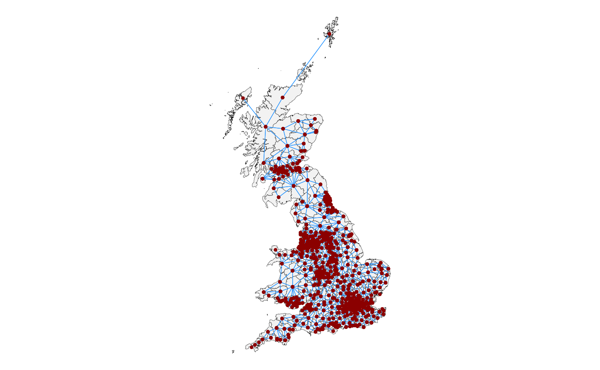

Visualise a neighbourhood structure on a map
Usage
st_quickmap_nb(
nbsf,
linkcol = "dodgerblue",
bordercol = "gray7",
pointcol = "darkred",
fillcol = "gray95",
linksize = 0.2,
bordersize = 0.1,
pointsize = 0.8,
title = NULL,
subtitle = NULL,
nodes = "point",
numericsize = 5,
numericcol = "black",
concavehull = FALSE,
hullratio = 0.8,
hullcol = "darkgreen",
hullsize = 0.5
)Arguments
- nbsf
an `sf` dataframe with a neighbourhood column called "nb", such as the output of `st_bridges()`
- linkcol
colour of lines connecting neighbours.
- bordercol
colour of boundary lines between areas.
- pointcol
colour of centroid points if nodes are `"point"`.
- fillcol
fill of areas.
- linksize
linewidth of lines connecting neighbours.
- bordersize
linewidth of borders between areas.
- pointsize
size of centroid points if nodes are `"point"`.
- title
plot title.
- subtitle
plot subtitle.
- nodes
default `"point"`. Can also be `"numeric"`.
- numericsize
font size if nodes are `"numeric"`.
- numericcol
font colour if nodes are `"numeric"`.
- concavehull
default `FALSE`. Whether or not to show concave hulls.
- hullratio
value between 0 and 1. 1 returns the convex hulls, 0 maximally concave hulls.
- hullcol
colour of concave hull lines.
- hullsize
line width of concave hull lines.
Examples
st_bridges(uk_election,"constituency_name") |>
st_quickmap_nb()
